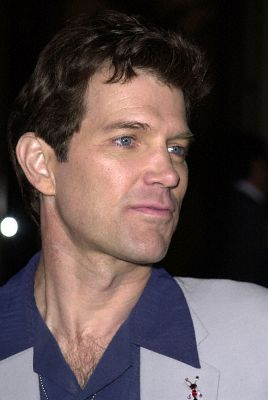
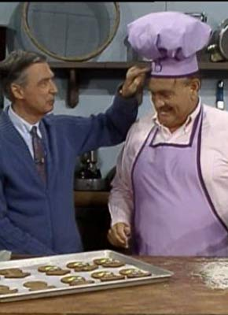

#1062 Das Schweigen der Lämmer
Alternativ: The Silence of the Lambs
Auszeichnungen: 5 Oscars gewonnen für 2 Oscars nominiert 1 GoldenGlobes gewonnen 2 BAFTA-Awards gewonnen

 IMDB-Wertung: 8.6 / 10
IMDB-Wertung: 8.6 / 10  IMDB-TOP-Platzierung: 24
IMDB-TOP-Platzierung: 24  Metascore: 85
Metascore: 85 
Clarice Starling, Auszubildende beim FBI, bekommt von einem ihrer Lehrer den Auftrag, sich im Gefängnis mit Dr. Hannibal Lecter, einem Massenmörder und Psychiater, zu befassen. Durch ihre Unbefangenheit hoffen sie, daß Lecter ihnen bei der Suche nach einem anderen Serienkiller hilft, aber es ist nicht leicht, an Lecter heranzukommen.
Jahr: 1991
Dauer: 118 Minuten
FSK: 16
Land: USA Studio: Orion PicturesTonspuren: DTS - ,
Untertitel: Deutsch,
Auflösung: 1080p (1920x1032) Größe: 12185 MB
Genre: Krimi, Drama, Thriller
Regisseur:  Jonathan Demme
Jonathan Demme
Drehbuch: Thomas Harris, Ted Tally
Soundtrack: Howard Shore
Darsteller:
 Jodie Foster als Clarice Starling
Jodie Foster als Clarice Starling Kasi Lemmons als Ardelia Mapp
Kasi Lemmons als Ardelia Mapp Scott Glenn als Jack Crawford
Scott Glenn als Jack Crawford- Anthony Heald als Dr. Frederick Chilton
 Frankie Faison als Barney
Frankie Faison als Barney Anthony Hopkins als Dr. Hannibal Lecter
Anthony Hopkins als Dr. Hannibal Lecter Brooke Smith als Catherine Martin
Brooke Smith als Catherine Martin Ted Levine als Jame Gumb
Ted Levine als Jame Gumb Tracey Walter als Lamar
Tracey Walter als Lamar Dan Butler als Roden
Dan Butler als Roden Obba Babatundé als TV Anchor Man
Obba Babatundé als TV Anchor Man Diane Baker als Senator Ruth Martin
Diane Baker als Senator Ruth Martin Roger Corman als FBI Director Hayden Burke
Roger Corman als FBI Director Hayden Burke Charles Napier als Lt. Boyle
Charles Napier als Lt. Boyle Cynthia Ettinger als Officer Jacobs
Cynthia Ettinger als Officer Jacobs Andre B. Blake als Tall Memphis Cop
Andre B. Blake als Tall Memphis Cop-  Chris Isaak als SWAT Commander
 Daniel von Bargen als SWAT Communicator
Daniel von Bargen als SWAT Communicator Harry Northup als Mr. Bimmel
Harry Northup als Mr. Bimmel John W. Iwanonkiw als Orderly , uncredited
John W. Iwanonkiw als Orderly , uncredited- Chris McGinn als Autopsy Victim , uncredited
- Ted Monte als FBI Agent , uncredited
- George A. Romero als FBI Agent in Memphis , uncredited
- Edward Saxon als Benjamin Raspail, Head in a Jar , uncredited
- Mike Schaeffer als Prison Guard , uncredited
- Lawrence A. Bonney als FBI Instructor
- Lawrence T. Wrentz als Agent Burroughs
-  Don Brockett als Friendly Psychopath
- Frank Seals Jr. als Brooding Psychopath
 Stuart Rudin als Miggs
Stuart Rudin als Miggs- Maria Skorobogatov als Young Clarice
- Jeffrie Lane als Clarice's Father
- Leib Lensky als Mr. Lang
- George 'Red' Schwartz als Mr. Lang's Driver
- Jim Roche als TV Evangelist
- James B. Howard als Boxing Instructor
- Bill Miller als Mr. Brigham
- Chuck Aber als Agent Terry
- Gene Borkan als Oscar
- Pat McNamara als Sheriff Perkins
- Kenneth Utt als Dr. Akin
 Paul Lazar als Pilcher
Paul Lazar als Pilcher- Darla als 'Precious'
- Adelle Lutz als TV Anchor Woman
- George Michael als TV Sportscaster
 Ron Vawter als Paul Krendler
Ron Vawter als Paul Krendler- Jim Dratfield als Sen. Martin's Aide
- D. Stanton Miranda als 1st Reporter
- Rebecca Saxon als 2nd Reporter
- Danny Darst als Sgt. Tate
Datei: X:\5-Pentalogie(A-Z)\Hannibal Lecter\Schweigen der Lämmer, Das (1991, FSK16, 1920x1032).mkv seit 15.05.2015
Festplatte: HD Collection-3(N-Z)-6(A-Z)
 Es gibt insgesamt 8 Filme in der Gruppe '5-Pentalogie(A-Z)\Hannibal Lecter'
Es gibt insgesamt 8 Filme in der Gruppe '5-Pentalogie(A-Z)\Hannibal Lecter'